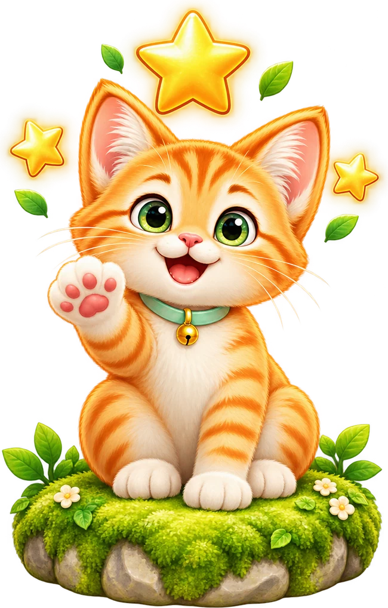
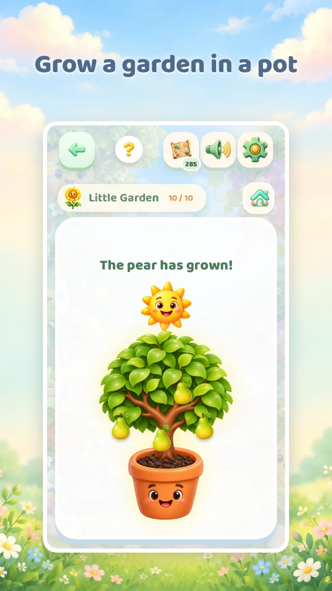
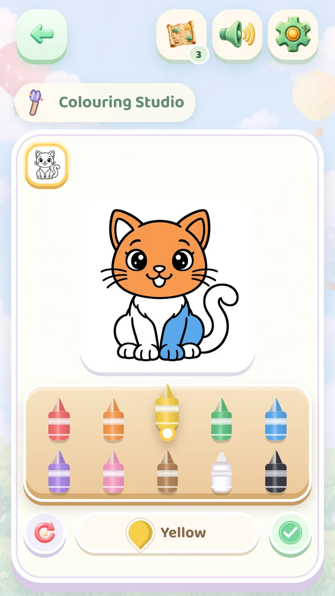
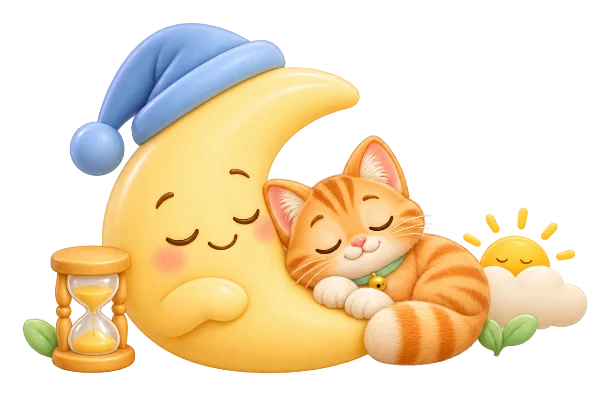
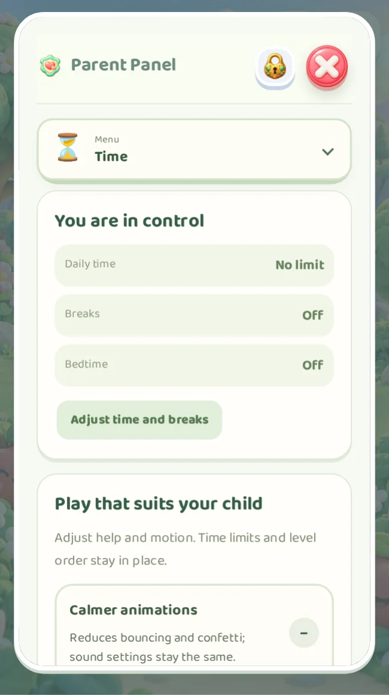

More to do together
Three screen-free ideas every week. Play Together questions in all 18 games that match the picture at each stop.
Full version
More of the games they love, new creative scenes and a map for each sibling. One Google Play purchase gives access to the full collection.
One payment. No subscription.
Parent area → Full version. Google Play shows the current price.




285 stops include the 50 free stops. Stops unlock in order in both versions.
What the full version adds
Everything in the free version stays. On top of it, the full version adds:
Three screen-free ideas every week. Play Together questions in all 18 games that match the picture at each stop.

Every first discovery with its date. Every activity of the last 6 months, month by month. A page for each child.

All paintings, scenes and the notes you took together, in one A4 PDF you can share.

The first try and the latest drawing of every shape side by side; no scores, just memories.

Daily time, break reminders and bedtime, set separately for each child.

On one device, each sibling has their own map, stars and pictures.
The free version is made for getting to know the game across 50 stops. The full version extends the same map to 285 stops and opens every parent tool.
| Content | Free | Full version |
|---|---|---|
| Adventure levels | 25 | 150 |
| Colouring pages | 4 | 26 |
| Jigsaw pictures | 2 | 12 |
| Animal Pairs rounds | 3 | 9 |
| Fruit Memory rounds | 3 | 10 |
| Safari clues | 2 | 9 |
| Balloon rounds | 3 | 12 |
| Animal Homes rounds | 2 | 8 |
| Think and Sort stops | 0 | 25 |
| Music stops | 3 | 6 |
| Garden plants | 1 | 10 |
| Bath friends | 2 | 8 |
| Total game stops | 50 | 285 |
| Content | Free | Full version |
|---|---|---|
| Play Together questions | Sample in 2 games | In all 18 games, five each |
| Weekly screen-free family plan | 1 idea a week | 3 ideas a week |
| Daily time, breaks and bedtime | — | Separate for each child |
| Memory Book (A4 PDF) | 2 artworks, 1 note | All artworks and notes |
| First and latest drawings | 1 shape | Every shape |
| Progress history | First 2 entries | All first discoveries and 6 months |
| Family profiles | 1 child | Up to 4 children |
| Five languages, offline voices, no ads | Included | Included |
Numbers match app version 1.1.2. The full version includes all free content; in both versions the stops open in order.

Together, at your pace
An adult check protects the parent area, where you can plan play time, see what they have tried and find ideas for time together.
Daily play time, break reminders and bedtime, separately for each child.
Completed activities and time spent. A play summary, not a developmental or ability test.
Save or share artwork, and prepare A4 colouring sheets to print.
Familiar pictures, new words
Choose a picture, listen to its name, then find the same thing at home. All five languages are available in both versions.
Recorded voices for all five languages are included and work offline.
One payment

Parent area → Full version shows “You have the full version · Payment complete · No further charges”, and the buy button no longer appears.
One payment. No subscription.
Explore 50 free stops to see how the game fits your family.
Review the full collection and the price supplied by Google Play.
Access opens after Google Play completes the payment and the purchase is verified.
No subscription or automatic renewal. Pending payments do not grant access. The purchase can be restored; game progress stays on the device.
No. The full version is a one-time Google Play purchase with no subscription and no automatic renewal. On a new device, “Restore purchase” with the same Google account is free. Once purchased, the Full version section in the game says “You have the full version”.
The free stops can be replayed. Earned drawings and medals stay. The full collection is available through an optional one-time parent purchase.
Open the parent area in the game, then Full version. Google Play shows the current price and asks you to confirm payment. This website does not take payments. There is no subscription.
It gives access to the full collection. Stops still unlock in order as they are completed; a purchase does not skip progress.
The Android app’s game content works offline. Purchases and restoration require internet.
Restore the purchase in the parent area using the same Google Play account. Progress and creations are saved on the device; restoring the purchase does not automatically move them.
No. Stars are game rewards. The parent summary shows completed activities and play time; it does not score a child’s development or ability.